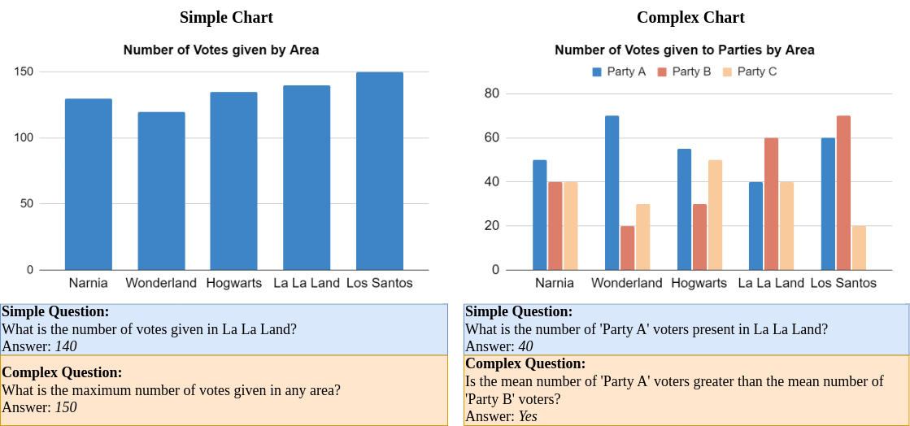
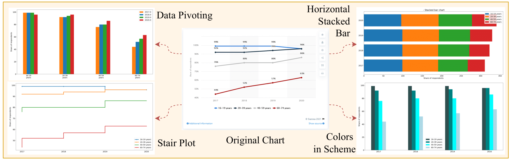

Unraveling the Truth: Do LLMs really Understand Charts? A Deep Dive into Consistency and Robustness
About
Chart Question Answering (CQA) plays a critical role in the domain of Visual Language Understanding (VLU). Despite the progress in Visual Language Models (VLMs), their robustness and consistency in this area remain underexplored. This paper presents a thorough evaluation of state-of-the-art VLMs using a diverse set of datasets specifically developed for this study, which include multiple question categories and chart formats.
We focus on two key areas:
- Model performance on varying levels of chart and question complexity
- Robustness across different visual representations of identical data
Our analysis reveals significant performance differences depending on question type and chart format, uncovering both the strengths and limitations of current models. We also propose future research directions to enhance the robustness and reliability of CQA systems, addressing gaps identified in this study. Ultimately, this work highlights the challenges in the field and offers insights for future advancements.
Can models reason consistently?
We analyse the effect of various chart question answering models across different chart types and question complexities.
Dataset Details
We used the ChartQA dataset as our primary benchmark owing to its variety and presence of underlying tables, which allowed us to generate controlled visual perturbations for analysis later.
Chart and Question Categorization:
To evaluate model performance, we categorized both charts and questions based on complexity:
- Simple Charts: Contain two columns (representing dependent and independent variables).
- Complex Charts: Contain more than two columns, depicting multiple variables and visual elements.
- Simple Questions Focus on single-step data extraction.
- Complex Questions Require multi-step reasoning, comparisons, and logical inferences.
This categorization helped form a modified evaluation dataset called ChartQA-Split, which allowed us to isolate the effects of chart and question complexity on model performance.
Key Findings
Our analysis revealed that model performance varied significantly across different chart and question categories. While models performed well on simple charts and questions, their accuracy dropped significantly on complex charts and questions. This suggests that current models struggle with multi-step reasoning and complex visual representations.
- Chart Types: Models perform better on simple charts than complex ones, due to challenges like overlapping data and color resolution in complex charts.
- Question Types: Models handle simple questions better than complex ones, with GPT-4o and Gemini 1.5 Flash showing the best reasoning abilities.
- Complexity Comparison: GPT-4o excels at reasoning on complex questions, while other models favor complex charts with simple questions, showing limited reasoning skills.
- Model Failures: Common failures include counting, distinguishing similar colors, and interpreting summary statistics, especially in tightly packed pie charts.
- Visual vs. Knowledge-based Reasoning: Some models rely more on internal knowledge than the actual chart, suggesting the need for better visual evaluation methods.
Are models robust on CQA?
We investigate the robustness of models across different visual representations of the same underlying data.
Dataset Details
We used the ChartQA dataset to generate visual perturbations, creating a new dataset called RobustCQA. This dataset contains visually altered charts with the same underlying data, allowing us to evaluate model robustness.
We developed the RobustCQA dataset with 75 perturbation types, manipulating visual elements like:
- Color Schemes: Changing palettes, gradients, and hues.
- Chart Types: Experimenting with line, bar, stair, and stem plots.
- Legend/Axis Modifications: Adjusting label positions and formatting.
The Matplotlib library was used to generate perturbed charts while preserving underlying data. Human evaluators verified the relevance and answerability of the perturbed charts, leading to a final set of 22 perturbation categories for simple charts and 25 for complex charts. We sampled 400 chart-question pairs for evaluation, comparing results against default Matplotlib charts.
Key Findings
Our analysis revealed significant performance drops across models when faced with visual perturbations. While most models struggled with consistency, some showed better robustness than others. Key findings include:
- Consistency: Most models exhibited significant performance drops when faced with perturbations. InternLM-XComposer2 and Gemini 1.5 Flash proved to be the most robust.
- Enhancing Performance: Perturbations like annotated data points, grids, optimal legend placement, and increased font size consistently improved model accuracy, particularly for bar graphs.
- Challenging Perturbations: Models struggled with logarithmic scales, horizontal stacked charts, and stair plots, often failing in tasks requiring mathematical reasoning.
- Perturbation-Question Correlation: Some chart types, like line charts, were more effective for trend-related questions, while stacked bar charts were generally ineffective except for aggregation tasks.
These findings highlight the importance of creating diverse datasets and more robust models for improved chart-based reasoning.
People
This work was possible due to a collaboration of people from various institutions and orgnanizations including IIIT Hyderabad, Adobe Research and UPenn. The people involved in the project were
Citation
Please cite our paper as below
@misc{mukhopadhyay2024unravelingtruthllmsreally,
title={Unraveling the Truth: Do LLMs really Understand Charts? A Deep Dive into Consistency and Robustness},
author={Srija Mukhopadhyay and Adnan Qidwai and Aparna Garimella and Pritika Ramu and Vivek Gupta and Dan Roth},
year={2024},
eprint={2407.11229},
archivePrefix={arXiv},
primaryClass={cs.CL},
url={https://arxiv.org/abs/2407.11229}}Acknowledgements
Research was sponsored by the Army Research Office and was accomplished under Grant Number W911NF-20-1-0080. The views and conclusions contained in this document are those of the authors and should not be interpreted as representing the official policies, either expressed or implied, of the Army Research Office or the U.S. Government. The U.S. Government is authorized to reproduce and distribute reprints for Government purposes notwithstanding any copyright notation herein. This work was partially funded by ONR Contract N00014-23-1-2365. Lastly, we acknowledge the generous gift from Adobe.